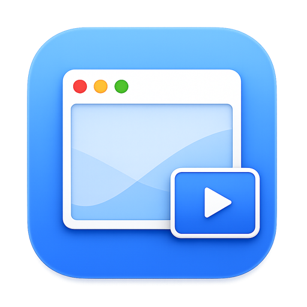

选中窗口或区域
从菜单栏窗口列表选择，也可以框选屏幕区域。常用操作还可以使用全局快捷键。
⌃⌥P · ⌃⌥⇧P
MyWindowPip.Picture-in-Picture for macOS
MyWindowPip 把任意 macOS 窗口或屏幕区域变成轻量 PiP 浮窗。盯住编译、日志、AI agent、CI 面板或网页视频，同时继续做手头的事。
macOS 14+ Apple Silicon + Intel MIT 开源
Small window, wider view
从菜单栏创建一个浮窗，把它放在视线边缘；状态会自己保持更新，不需要反复切换应用。
从菜单栏窗口列表选择，也可以框选屏幕区域。常用操作还可以使用全局快捷键。
⌃⌥P · ⌃⌥⇧P拖到合适的位置，按需缩放、平移、设置帧率、自动隐藏和点击行为。
Cmd + 拖动 / 滚动浮窗跨 Space 保持可见；完全遮挡时自动暂停，源窗口恢复或重启后可以重新连接。
继续工作 · 保持可见Designed for the edge of your screen
把 MyWindowPip 当作工作区的一块安静侧屏：需要时看一眼，想专注时让它退到背景。
捕获任意可分享窗口，或框选屏幕区域。选中窗口后，浮窗会跟随源窗口，而不是只截取一张静态图片。
跨 Space 和全屏应用显示，位于普通窗口之上但低于系统下拉菜单；缩放在捕获侧完成，文字和细节更利落。
静止检测会自动降低帧率，不可见时暂停拉流；自动隐藏、点击穿透、源窗口重连让浮窗留在工作流边缘。
Local by design
发布包使用自签名证书，尚未经过 Apple 公证。首次打开可能需要在 Finder 中右键选择“打开”；建议将应用拖入 /Applications。
v0.1.7 · Universal build
一个通用 DMG，支持 Apple Silicon 与 Intel Mac，需要 macOS 14 或更高版本。应用常驻菜单栏，没有 Dock 主窗口。
安装提示：请先将 App 拖入 /Applications 再启动，这有助于让屏幕录制授权在版本更新后保持稳定。屏幕录制权限是捕获功能所必需的，Accessibility 为可选增强权限。